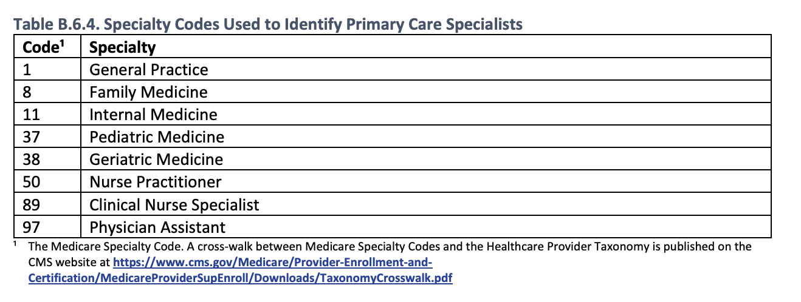
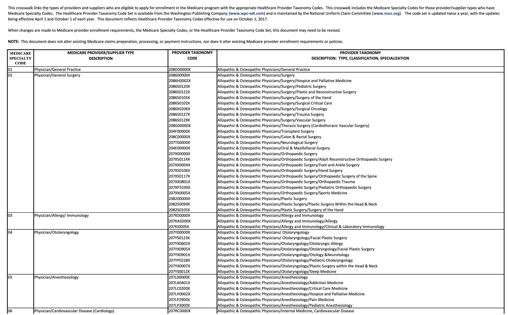
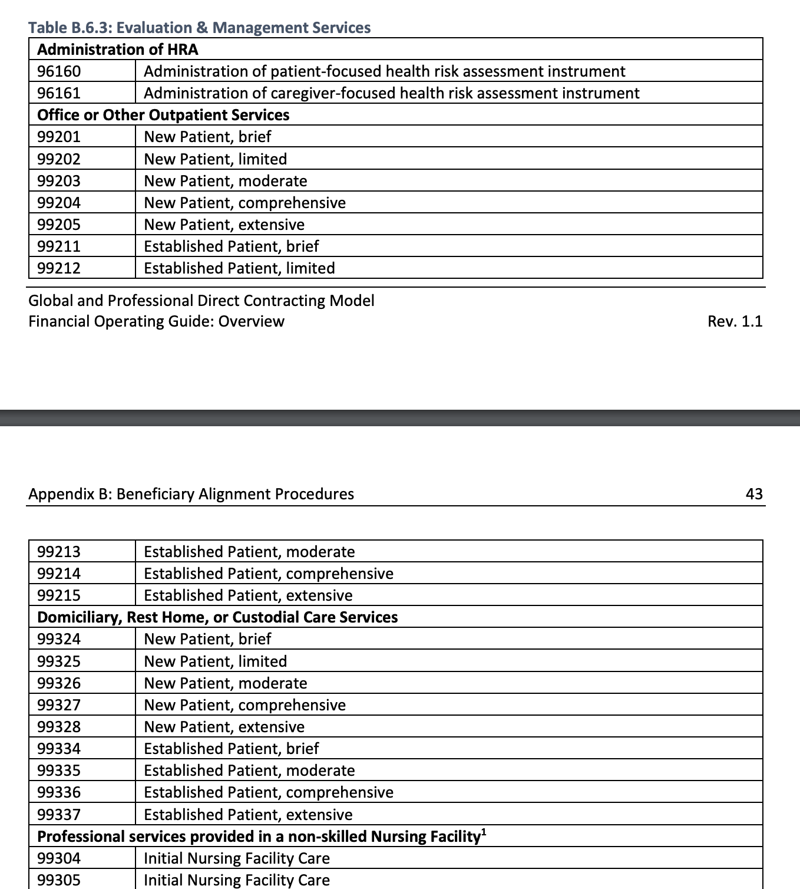
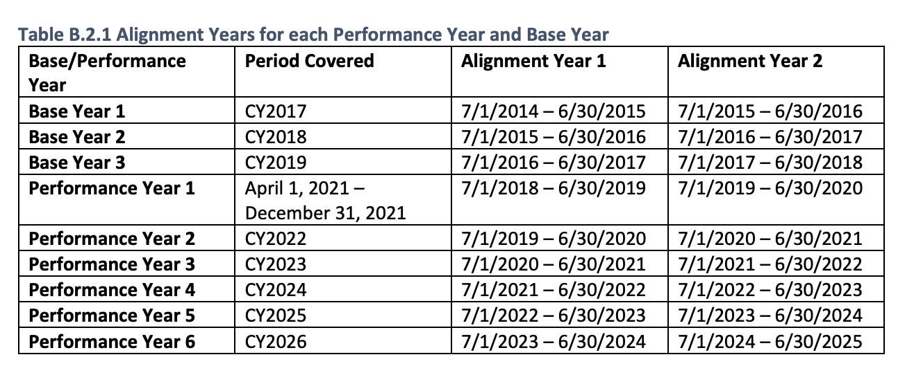

6 Member Attribution
Provider panel attribution is the means of attributing individual patients to a provider, usually a primary care provider using medical claims or electronic medical records data. There are many reasons why one would like attribute patients to providers from evaluating performance or understanding healthcare outcomes.
There is not “one way” to approach provider attribution, and there are many valid approaches to how to go about attributing patients to providers. In this section, we will talk about provider attribution at a high level, and look at one of the attribution methods used by the Center of Medicare and Medicaid services (CMS) in the context of their Next Gen ACO models, Direct Contracting Entity models, and ACO REACH programs (the same attribution model being used in all these programs).
6.1 Before Reading Further
Ask yourself, how should patients be attributed to providers? What if you only had medical claims data available to you, and you need to attribute patients to primary care providers?
- How do you determine if a provider is a primary care provider?
- Should a blood draw or lab count in the attribution process?
- If a patient doesn’t visit a provider in a long time, should they be attributed to a provider?
- How do you handle if a patient is seeing multiple providers in a short period of time?
- What data fields are available to you from medical claims data?
6.2 Example attribution model from CMS:
This example will use a single attribution model from some of CMS’s CMMI programs. Full details about this attribution model can be found here in “Appendix B”. This attribution model from CMS uses exclusively Medicare claims data to attribute Medicare patients to providers. Specific data used from the claims data are:
- Rendering provider NPI (used to determine if provider is primary care)
- Procedure code (CPT / HCPCS) (used to determine if service is primary care service)
- Place of service code (used to determine if service is primary care service)
- Date of service (used for timing)
- Claim allowed amounts (used for weighting)
Other sources of data are used as well for attribution in this model:
- NPPES – NPI registry data (used to determine if a provider is a primary care provider via the provider’s primary care taxonomy).
- Taxonomy crosswalk data (Crosswalks Medicare specialty code to provider taxonomy code)
6.2.1 Attribution model at a high level
The attribution model CMS uses to attribute patients to providers is used in the context of primary care. First CMS only looks at a subset of providers it deems as “primary care.” Then for a given patient, the attribution model looks at medical claims data for this subset of primary care providers and looks at which provider that patient has seen the most, with some weighting applied to give preference to more recently seen providers. Let’s walk through an example patient.

6.2.2 Going into more detail
Pull all medical claims data for a patient (professional claims only).
Filter the medical claims data based on the rendering provider NPI and crosswalks to filter to just primary care providers. Based on the rendering provider NPI on the claim, lookup that provider’s taxonomy on the npi registry database.

Here are the primary care specialty codes specified in this attribution model.

They need to be taken in context of the crosswalk to get from specialty code to taxonomy code.
- Filter out any claims that are not in the PQEM procedure code set provided.

Here’s a subset of some of the procedure codes that are considered primary care services. The full list can be found on page 40 of this pdf. Some have a place of service code pre-requisite to be considered valid.
Filter out claims that do not meet the date range criteria for the alignment period.
Apply weighting to allowed amounts and sum by provider. Claims in the earlier alignment period should be weighted by 1/3, and claims in the more recent alignment period should be weighted 2/3.

- The provider with the most weighted dollars gets the patient attributed. In the case of a tie, choose the provider with the more recent claim.
6.2.3 Issues that could be raised about the attribution model above.
- This model will not attribute patients who have not seen their primary care provider in the two-year observation period.
- This model will end up not weighting care provided by Advanced Practice Providers (APPs) less than care provided by MDs and DOs.
- This model might have specialty care services competing with primary care services due to the taxonomy classification system and crosswalk not reflecting APPs providing specialist care.
- This model might not be a timely reflection for attributing patients to providers. It may take up to two years for a patient to get appropriately attributed to a provider after a change in provider.
6.3 Things to consider when creating an attribution model
- How are you going to use the model? Is your use care specific to primary care?
- Does it make sense to use allowed amounts?
- How should timing of visits be taken into account?
- Is there other sources besides medical claims data that you have available to use?
- How should APP visits be handled?
- Does your model need to be straight forward and explainable to others?
6.4 References
This page just took a look at a single attribution model. More attribution models exist. * https://www.ncbi.nlm.nih.gov/pmc/articles/PMC6549236/